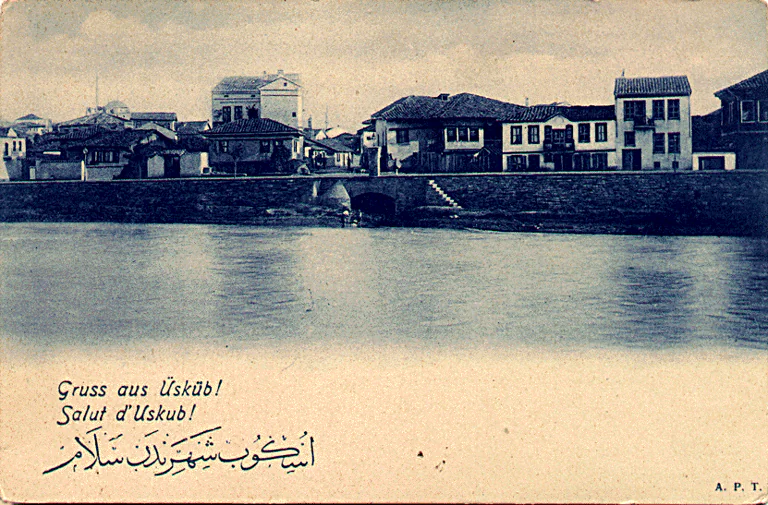
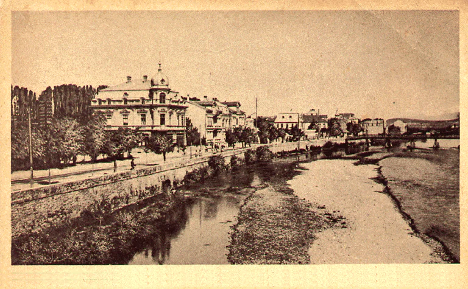
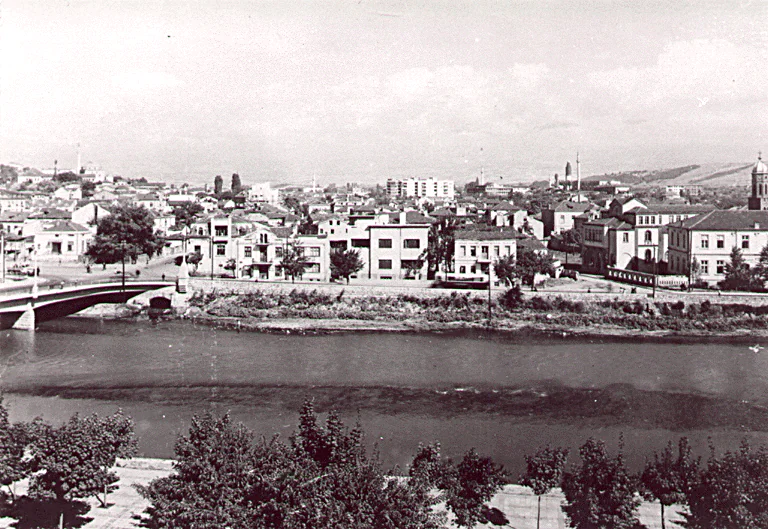
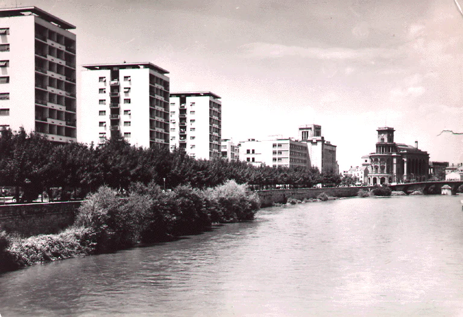

Am Fluss Vardar
- Drehbuch
- Dimitrie Osmanli, Simon Drakul
- Kamera
- Kiro Bilbilovski
- Jahr
- 1964
- Dauer
- 00:16

Der Kai „13. November“ - 1888.

Eine Wassermühle am Oberlauf des Vardar - Ende des 19. Jahrhunderts.

Obwohl diese Postkarte stark beschädigt ist, wurde sie in die Sammlung aufgenommen, denn sie stammt vom Ende des 19. und Anfang des 20. Jahrhunderts, und es sind einige Gebäude zu sehen, die es nur auf dieser Postkarte gibt. Rechts die Osmanische Bank. Im Vordergrund die alte Platane, an der 1689 der Leichnam Karpošs aufgehängt wurde. Darüber erhebt sich die Festung von Skopje - Kale. Ganz links ein Teil der Steinbrücke.

Blick auf die beiden Kais des Vardar - Anfang des 20. Jahrhunderts.

Skopje 1902 - Blick von der Steinbrücke zur Holzbrücke. Der Vardar hat bereits Kaimauern. Zu sehen sind Wohn- und öffentliche Gebäude. Rechts im Bild das türkische Theater, links, ganz am Anfang, die Burmali-Moschee. Im Hintergrund das Gebäude der Bank und die alte Post.

Blick zum kleinen Holzsteg, zum alten türkischen Theater und auf einen Teil der Festung von Skopje - Kale. (Anfang des 20. Jahrhunderts)

Blick vom rechten Ufer des Vardar zur Festung von Skopje - Kale. (Anfang des 20. Jahrhunderts).

Blick auf das linke Ufer des Vardar (Kai „Dimitar Vlahov“) - Anfang des 20. Jahrhunderts. In der Kaimauer ist die Mündung der Serava zu sehen.

Die Holzbrücke, vor dem Bau der Eisernen Brücke. Im Hintergrund die Steinbrücke und die Burmali-Moschee. (Ende des 19. Jahrhunderts)

Anfang des 20. Jahrhunderts. Die Osmanische Bank, die Metropolie von Skopje und die Gebäude am linken Ufer des Vardar, gleich hinter der Steinbrücke. Im Vordergrund die alte Platane.

Blick auf das linke Ufer des Vardar zur Kirche Hl. Mina (mit zwei Kuppeln) und zur Kirche Hl. Muttergottes (im Hintergrund mit einer Kuppel). - Anfang des 20. Jahrhunderts.

Im Vordergrund das Gerichtsgebäude und die alte Schule, im Hintergrund die Kuppeln der Kirche Hl. Mina - Anfang des 20. Jahrhunderts.

Blick auf die beiden Kais des Vardar - Anfang des 20. Jahrhunderts.

Das linke Ufer des Vardar - der Kai „Dimitar Vlahov“ mit der Osmanischen Bank, der Metropolie und den zwei Kuppeln der Kirche Hl. Mina im Hintergrund. (Anfang des 20. Jahrhunderts)

Das linke Ufer des Vardar - der Kai „Dimitar Vlahov“ zwischen der Steinbrücke und der Eisernen Brücke, mit Wohnhäusern. (Anfang des 20. Jahrhunderts)

Das Foto wurde um 1910 von der Steinbrücke aus aufgenommen. Links das alte türkische Theater, darüber die Festung von Skopje - Kale.

Das linke Ufer des Vardar mit dem jüdischen Viertel und im Hintergrund die Festung von Skopje - Kale. (1910)

Das Foto wurde um 1910 von der Steinbrücke aus aufgenommen. Links das alte türkische Theater, darüber die Festung von Skopje - Kale.

Skopje beim Hochwasser von 1916. Das Wasser reicht bis an die Gebäude. Rechts sieht man, wie ein Teil eines Gebäudes durch das Hochwasser eingestürzt ist.

Skopje nach 1918. Die beiden Kais des Vardar als für die Stadtentwicklung wichtige Längsachsen. Im Hintergrund die Steinbrücke mit der Burmali-Moschee. Zu sehen ist die rege Bebauung des Kais mit verschiedenen, der europäischen Schule nahen Architekturformen.

Skopje vor dem Balkankrieg. Der Kai am rechten Ufer des Vardar. Im Hintergrund die Burmali-Moschee und die Steinbrücke. Im Vordergrund das russische Konsulat und andere Gebäude. Die Architektur ist von der europäischen Schule beeinflusst, mit Elementen klassischer, akademischer und pseudoklassischer Formgebung.

Blick auf das rechte Ufer des Vardar mit den Gebäuden der Bank und der alten Post zwischen der Steinbrücke und dem kleinen Holzsteg - Anfang der 1920er Jahre.

Blick zum linken Ufer des Vardar. Im Vordergrund das Gerichtsgebäude und die alte Schule, im Hintergrund die Kuppeln der Kirche Hl. Mina. Rechts davon die Kirche Hl. Muttergottes. - 1920er Jahre.

Blick auf das rechte Ufer des Vardar mit den Gebäuden der Bank und der alten Post zwischen der Steinbrücke und dem kleinen Holzsteg - Anfang der 1920er Jahre.

Das rechte Ufer des Vardar vor der Steinbrücke. Links das Gebäude der Bank und die alte Post. Rechts auf der Postkarte ist der kleine Holzsteg zu sehen - um 1920.

Blick auf das rechte Ufer des Vardar mit den Gebäuden der Bank und der alten Post zwischen der Steinbrücke und dem kleinen Holzsteg - Anfang der 1920er Jahre.

Ein Teil des linken Ufers des Vardar - etwa der Standort des heutigen Gebäudes des Mazedonischen Rundfunks. Zu sehen ist das Minarett der Vardar-Tekke-Moschee (erbaut Anfang des 16. Jahrhunderts) - Anfang der 1920er Jahre.

Ein Teil des linken Ufers des Vardar - etwa der Standort des heutigen Gebäudes des Mazedonischen Rundfunks. Zu sehen ist das Minarett der Vardar-Tekke-Moschee (erbaut Anfang des 16. Jahrhunderts) - Anfang der 1920er Jahre.

Blick auf das rechte Ufer des Vardar vor der Steinbrücke. Der mittlere Kaibereich. Links die Gebäude der Bank und der alten Post. Rechts auf der Postkarte der kleine Holzsteg - um 1920.

Skopje - ein Teil des Platzes. Links ein Teil der Steinbrücke, rechts das Gelände vor dem Bau der Nationalbank. Der Kai ist als Verkehrsstraße angelegt. Im Hintergrund rechts das Knabengymnasium.

Skopje - ein Teil des Platzes. Links ein Teil der Steinbrücke, rechts das Gelände vor dem Bau der Nationalbank. Der Kai ist als Verkehrsstraße angelegt. Im Hintergrund rechts das Knabengymnasium. - 1930er Jahre

Der Kai „Dimitar Vlahov“ - linkes Ufer des Vardar. - Anfang der 1920er Jahre

Blick von der Steinbrücke zum Denkmal für die gefallenen Kämpfer und zur Osmanischen Bank. - 1920er Jahre.

Panoramabild von Skopje, genauer des linken Vardar-Kais mit einem Teil des jüdischen Viertels, dem Viertel Pajko und der Steinbrücke. - 1920er Jahre

Blick vom Offiziersheim über Skopje zum jüdischen Viertel. - 1920er Jahre.

Blick auf das rechte Ufer des Vardar mit Wohnhäusern. Im Hintergrund die Steinbrücke und der Bau des Offiziersheims. (um 1925)

Skopje, 1930er Jahre. Blick auf die beiden Kais. Im Vordergrund die alte Schule und das Gerichtsgebäude, gleich dahinter die zwei Glockentürme der Kirche Hl. Mina. Im Hintergrund das Offiziersheim, vor dem Bau der Nationalbank. Das Foto wurde von der Eisernen Brücke aus aufgenommen.

Der Kai am rechten Ufer des Vardar vor der Steinbrücke. Im Vordergrund ein Wohnhaus mit Läden im Erdgeschoss und den Eingängen zur Passage „Aroesti“, die in den 1920er Jahren gebaut wurde und ein kleines Einkaufszentrum mit Handwerker- und Händlerläden war. (Beim verheerenden Erdbeben von 1963 kamen an dieser Stelle viele Menschen ums Leben.) Im Hintergrund die Landwirtschaftsbank, das Offiziersheim, die Nationalbank und die Steinbrücke. (1930er Jahre)

Der Kai „13. November“ mit Wohnhäusern, einem Teil der Steinbrücke und dem Offiziersheim - 1920er Jahre.

Blick zum Kai „13. November“ am rechten Ufer des Vardar, zur Steinbrücke und zum Offiziersheim - aufgenommen um 1927.

Ein Teil des Platzes vor der Steinbrücke und beide Ufer des Vardar. Links im Hintergrund die Kirche Hl. Mina mit zwei Kuppeln und etwas weiter links die Kirche Hl. Muttergottes. Der Kai ist gestaltet, mit elektrischer Beleuchtung und Grün. (1925-1930)

Das rechte Ufer des Vardar, vom kleinen Holzsteg zum Park hin - 1930er Jahre.

Der Kai „13. November“. Blick zur Steinbrücke und zum Offiziersheim - Ende der 1930er Jahre.

Der Kai am linken Ufer des Vardar vor der Steinbrücke mit Wohnhäusern im jüdischen Viertel. Im Hintergrund ist die Osmanische Bank zu sehen - um 1930.

Blick von der Steinbrücke über den Vardar zum kleinen Holzsteg und zu beiden Ufern. Rechts das Nationaltheater, links das Gebäude der Bank und die alte Post. - 1930er Jahre

Blick auf das Viertel „Bunjakovec“. Das Flussbett des Vardar ist mit Erddämmen gesichert. - 1930er Jahre

Das linke und das rechte Ufer des Vardar. Aufgenommen von der Steinbrücke. Der mittlere Kaibereich auf beiden Seiten des Vardar. - um 1930

Das rechte Ufer des Vardar. Kai „13. November“. - um 1930

Skopje, 1930er Jahre. Blick auf die beiden Kais. Blick von der Eisernen Brücke über den Vardar auf die beiden mit Wohn- und öffentlichen Gebäuden bebauten Kais. Im Vordergrund rechts die alte Schule, das Gerichtsgebäude und die zwei Glockentürme der Kirche Hl. Mina. Im Hintergrund das Offiziersheim und die Nationalbank.

Blick zum Kai „13. November“ am rechten Ufer des Vardar, zur Steinbrücke und zum Offiziersheim - aufgenommen um 1930.

Blick auf die beiden Kais des Vardar und die Eiserne Brücke. - 1950er Jahre

Blick auf die beiden Kais des Vardar und die Betonbrücke. - 1950er Jahre.

Das rechte Ufer des Vardar hinter der Steinbrücke, fotografiert vor dem verheerenden Erdbeben vom 26. Juli 1963. Im Hintergrund das Offiziersheim und die Nationalbank.

Der Kai am rechten Ufer des Vardar. Geschäfts- und Wohnkomplex oder „Vardar-Türme“ (Architekt Aleksandar Serafimovski). Das Foto entstand in den 1960er Jahren, vor dem verheerenden Erdbeben vom 26. Juli 1963.

Das rechte Ufer des Vardar mit der Steinbrücke, den Türmen am Vardar und dem Grand Hotel „Skopje“, fotografiert unmittelbar nach dem verheerenden Erdbeben vom 26. Juli 1963 und vor der Regulierung des Vardar. Die Regulierung erfolgte 1965-1968.

Blick zum rechten Ufer des Vardar. Der Bogen im Vordergrund gehört zur Steinbrücke; aufgenommen in den 1950er Jahren.

Blick vom linken Ufer des Vardar zur Steinbrücke. Im Hintergrund sind die Vardar-Türme zu sehen. - 1970er Jahre

Blick auf die heutige Hauptpost - das Telekommunikationszentrum (erbaut 1974-1980, Architekt Janko Konstantinov) und den Kai davor.

 Aquädukt4 Postkarten
Aquädukt4 Postkarten Kale30 Postkarten
Kale30 Postkarten Brücken60 Postkarten
Brücken60 Postkarten Kai58 Postkarten
Kai58 Postkarten Platz46 Postkarten
Platz46 Postkarten Bauten66 Postkarten
Bauten66 Postkarten Christliche Gotteshäuser19 Postkarten
Christliche Gotteshäuser19 Postkarten Muslimische Bauten33 Postkarten
Muslimische Bauten33 Postkarten Offiziersheim29 Postkarten
Offiziersheim29 Postkarten Theater28 Postkarten
Theater28 Postkarten Bahnhof13 Postkarten
Bahnhof13 Postkarten Schulen36 Postkarten
Schulen36 Postkarten Parks12 Postkarten
Parks12 Postkarten Märkte18 Postkarten
Märkte18 Postkarten Straßen38 Postkarten
Straßen38 Postkarten Panorama I60 Postkarten
Panorama I60 Postkarten Panorama II30 Postkarten
Panorama II30 Postkarten Collagen55 Postkarten
Collagen55 Postkarten Hochwasser9 Postkarten
Hochwasser9 Postkarten Erdbeben27 Postkarten
Erdbeben27 Postkarten Skopje 200026 Postkarten
Skopje 200026 Postkarten